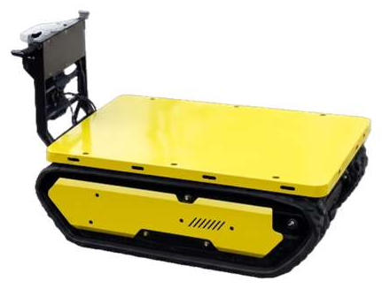
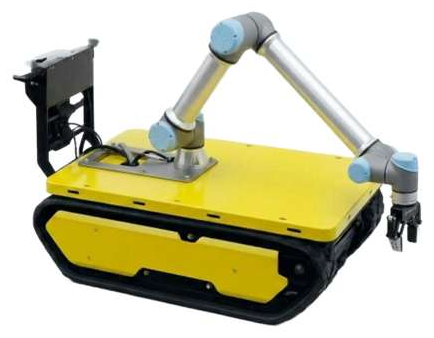
COMBOT
험지용 스마트 운반 로봇
| 적재 | 300 kg |
|---|---|
| 구동 | 궤도 |
| 주행 모드 | 자율, 추종(테더링), 수동, 원격 |
| 상부 모듈 | 평판, 적재함, 덤프 호퍼, 협동로봇 팔 |
협동로봇 팔을 달면 싣고 내리고 집는 작업까지 자동화할 수 있습니다.
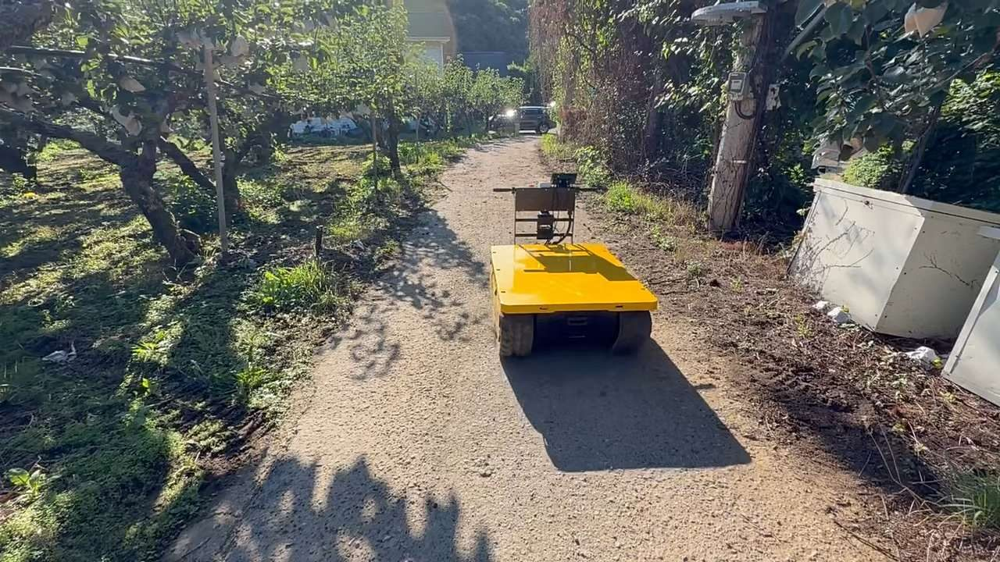
로스모스는 흙길, 풀숲, 눈길처럼 정해진 길이 없는 곳을 달리는 자율주행로봇을 만듭니다. 서울대학교 지능형자동차연구실에서 20년간 쌓은 자율주행 연구를 현장에서 쓰는 제품으로 옮기고 있습니다.
지금의 자율주행은 차선과 정밀지도가 있는 곳을 전제로 합니다. 산길, 과수원, 눈 덮인 비포장로에는 둘 다 없습니다.
물자 보급과 수송은 전투력과 생존성에 바로 이어집니다. 지형이 험할수록 사람이 직접 옮겨야 하는 짐이 늘어납니다.
고령화와 인력 부족이 가장 심한 곳이 경사지와 비포장 농로입니다. 무거운 수확물과 자재를 옮길 사람이 없습니다.
로스모스는 길이 없는 곳부터 풉니다. 어떻게 푸는지 보기
카메라 1대와 GPS 1대만으로 처음 가보는 산길의 목적지까지 도달했습니다. 2024년 국제 로봇 자율주행 대회에서 UC버클리, NUS 등을 제치고 우승한 기술이 로스모스의 출발점입니다.
SCI급 로봇 학술지와 국제 학회 논문, 대회 우승으로 검증한 오프로드 주행 기술
Snuky 1.0, 2.0, WIDEX를 거쳐 COMBOT까지 4세대 플랫폼을 직접 개발
NPU 기반 로봇 임베디드 보드, Yocto BSP, CAN 기반 제어 아키텍처
2계층 Safe VLA 구조, 실패 복구(Failure Recovery), 다수 로봇 관제 UI
주행하면서 계속 학습하고, 센서 정보를 그 자리에서 지도로 만듭니다. 사람이 미리 길을 알려주지 않아도 됩니다.
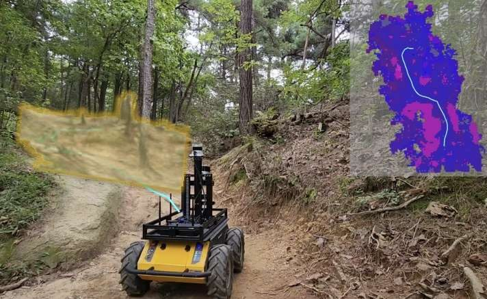
눈, 진흙, 낙엽처럼 처음 보는 노면을 만나면 주행 중에 바로 학습합니다. 비싼 센서 없이 저가 카메라, 저가 라이다, GPS만으로 미지 환경을 달립니다.
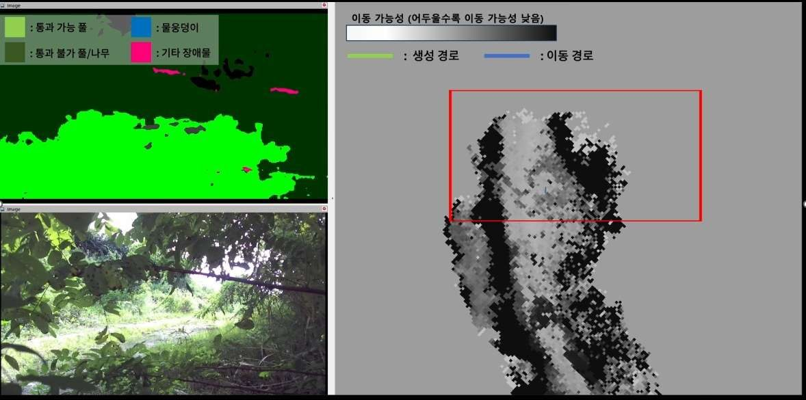
센서 데이터를 실시간으로 분류해 시맨틱 맵을 만들고, 그 위에서 안전한 길을 스스로 고릅니다. 가볍게 설계해 로봇에 탑재된 엣지 컴퓨터에서 그대로 돌아갑니다.
모든 로봇에 같은 자율주행, 시맨틱 맵핑, 안전 소프트웨어가 들어갑니다. 현장에 따라 구동계와 상부 모듈만 바꿉니다.


험지용 스마트 운반 로봇
| 적재 | 300 kg |
|---|---|
| 구동 | 궤도 |
| 주행 모드 | 자율, 추종(테더링), 수동, 원격 |
| 상부 모듈 | 평판, 적재함, 덤프 호퍼, 협동로봇 팔 |
협동로봇 팔을 달면 싣고 내리고 집는 작업까지 자동화할 수 있습니다.
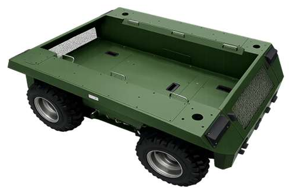
실내외 겸용 모듈형 운반 로봇
| 적재 | 150 kg |
|---|---|
| 구동 | 4륜, 서스펜션 |
| 프레임 | 오픈 센터, 폭 확장 가능 |
| 운용 | 실내외, 전천후 |
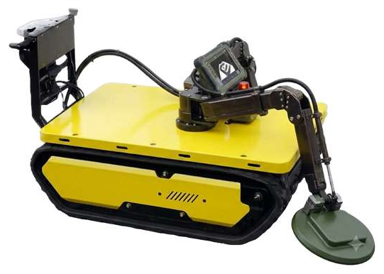
지뢰탐지 로봇
통로 개척, 지뢰지대 정찰, 공병 지원
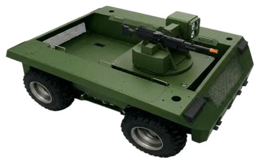
전투지원형, 전투형
탄약과 물자 수송, 부상자 후송, 전방 경계와 화력 지원
물자 보급과 수송은 전투력과 생존성에 직결됩니다. 병사를 따라 대용량 화물을 옮기고, 위험한 임무에서 사람을 빼냅니다.
고령화와 일손 부족이 가장 심한 곳이 비포장 농로와 경사지입니다. 작업자 옆에서 무거운 짐을 대신 나릅니다.
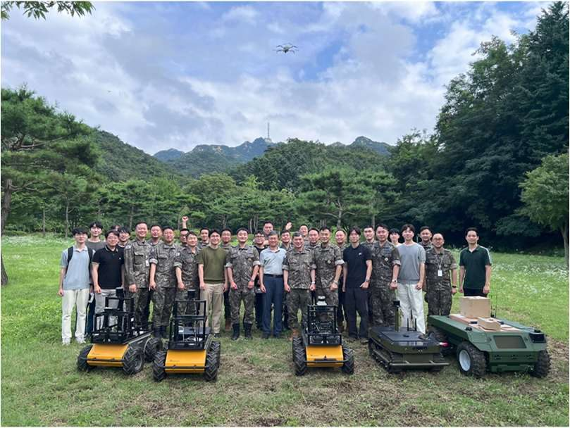
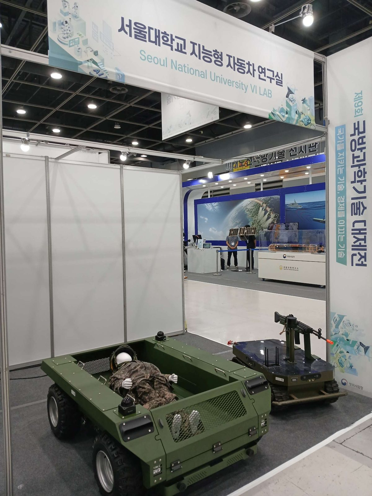
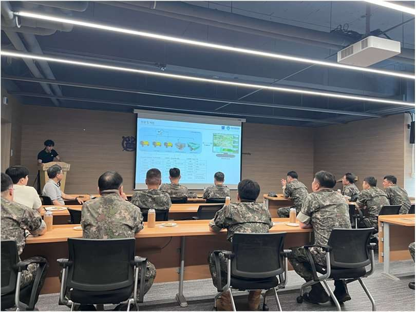
임무 모듈 인터페이스를 먼저 규격화하고, 군과 함께 시제품과 야전 시험을 거쳐 시범운용으로 갑니다.
임무 모듈 공통 인터페이스 규격, 지뢰탐지와 적재 모듈 요구사항, 운용 시나리오 정의
임무 탑재 로봇 시제품 제작, 험지 주행과 원격 운용 실증, 방호, EMI, 통신 두절 안전정지 시험
부대 시범운용과 피드백 반영, 방산 품질 규격 대응, 군용 모듈 양산 준비
구성원 10명 이상, 그중 80%가 엔지니어입니다.
서울대학교 지능형자동차연구실 지도교수
서울대학교 지능형자동차연구실
서울대학교 지능형자동차연구실
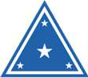
대한민국 육군